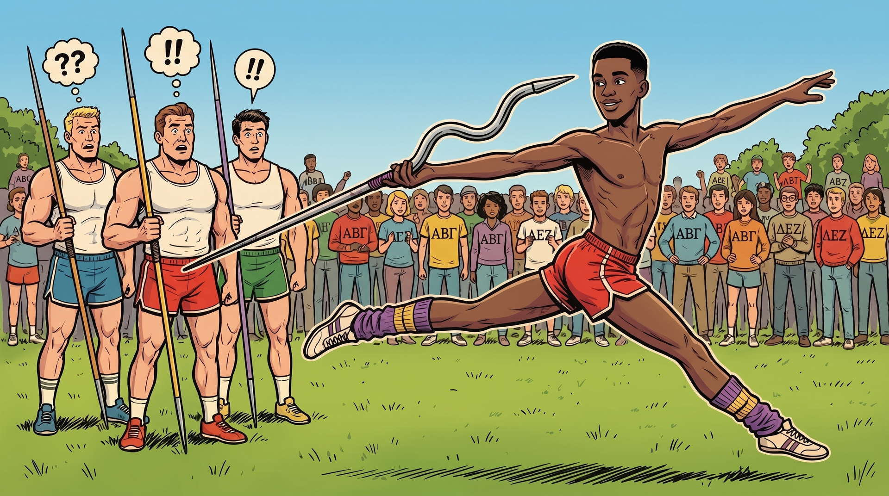

the origin story
…the throw that won the Greek Games.
They didn't fix Lamar's throw.
In Revenge of the Nerds, the nerds need to win the javelin event. Lamar throws with a limp-wristed flick that no coach could straighten out.
So they don't straighten it out. Wormser, the aerodynamics guy, builds a javelin around the throw Lamar already has. It leaves his hand, flaps down the field like a startled bird, and lands past everyone.
"Wormser! It worked!" — Revenge of the Nerds (1984)
That's the whole idea. Don't retrain the person. Engineer the tool around how they already work.
